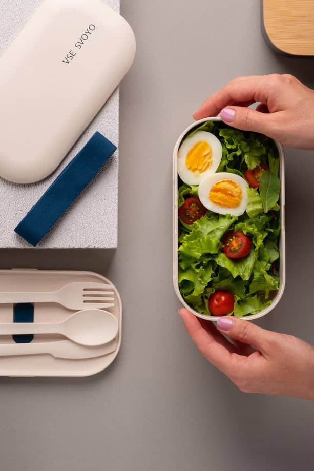

Калькулятор ваги: навіщо рахувати калорії
Зазвичай калорійність продуктів рахують для того, аби скинути зайві кілограми. Всі знають про принцип дефіциту калорій, але мало хто задумується про те, що існує кілька принципів схуднення. Навіщо рахувати калорії – розповідаємо у нашому матеріалі.
Перший принцип схуднути – це кількість калорій, яку ми споживаємо за день, і та, яку встигаємо за день витратити. Якщо йдеться про те, чи відповідає план харчування ситуації зі здоров’ям, то це властивому другому пункту схуднення. Третій передбачає фізичну активність і кількість наших активностей упродовж дня, а також і про те, чи достатньо наші м’язи споживають і спалюють енергії.
Не зовсім правильно вважати, що тільки кількість калорій впливає на схуднення, оскільки мають значення всі три фактори. Однак саме підрахунок калорій допомагає зрозуміти, споживаємо ми достатню кількість енергії. Коли ми наливаємо в склянку рідини більше, ніж місткість склянки, вона починає витікати. Організм же надлишок калорій може почати переробляти в жири. Тільки потрібно робити акцент на те, що не у всіх людей калорії засвоюються однаково.
Наприклад, ви випили одне лате в ресторані і з’їли маленьке тістечко. Це один прийом їжі, але він може містити добову норму калорій. Якщо не вважати на їхню кількість, неможливо зрозуміти, наскільки калорійний прийом їжі.
Хтось намагається схуднути і вживає лише корисну їжу, не обмежуючи себе в кількості. Але це не значить, що всі корисні продукти низькокалорійні. Такі продукти не дарма називають корисними, адже в них набагато більше плюсів. Для прикладу: калорійність кокосового і білого цукру буде майже однаковою, але з кокосового цукру організм може ще отримати домішки вітамінів і мінералів.
Введіть вашу вагу:
КОРИСНІ ПРОДУКТИ І КАЛОРІЙНІСТЬ
Хтось намагається схуднути і вживає лише корисну їжу, не обмежуючи себе в кількості. Але це не значить, що всі корисні продукти низькокалорійні. Такі продукти не дарма називають корисними, адже в них набагато більше плюсів. Для прикладу: калорійність кокосового і білого цукру буде майже однаковою, але з кокосового цукру організм може ще отримати домішки вітамінів і мінералів.
У кожного продукту своя калорійність, і залежить вона від кількості білків, жирів і вуглеводів. Наприклад, якщо продукт містить більше жирів, ніж білків і вуглеводів, він буде більш калорійний.

Так, наприклад, авокадо-тост з лососем і яйцем пашот – це страва з високою калорійністю, адже 1 грам жирів містить 9 калорій. Ще сюди можна віднести йогурти з різними наповнювачами. Калорійними страви роблять не лише підсолоджувачі, але і насіння льону, чіа, висівки.
Наприклад, якщо ви рахуєте калорії, немає ніякого сенсу відмовлятися від улюблених продуктів, то їх можна в розумних кількостях вписати в меню і продовжувати худнути. Не потрібно голодувати після шостої вечора, відмовлятися від вуглеводів ввечері та фруктів. Головне – контролювати кількість та якість продуктів. Не забувати також про ведення харчового щоденника. Це звичка, яка розвиває корисну навичку. Якщо ви страждаєте від зайвої ваги, це означає, що ви не в змозі харчуватися повністю інтуїтивно.